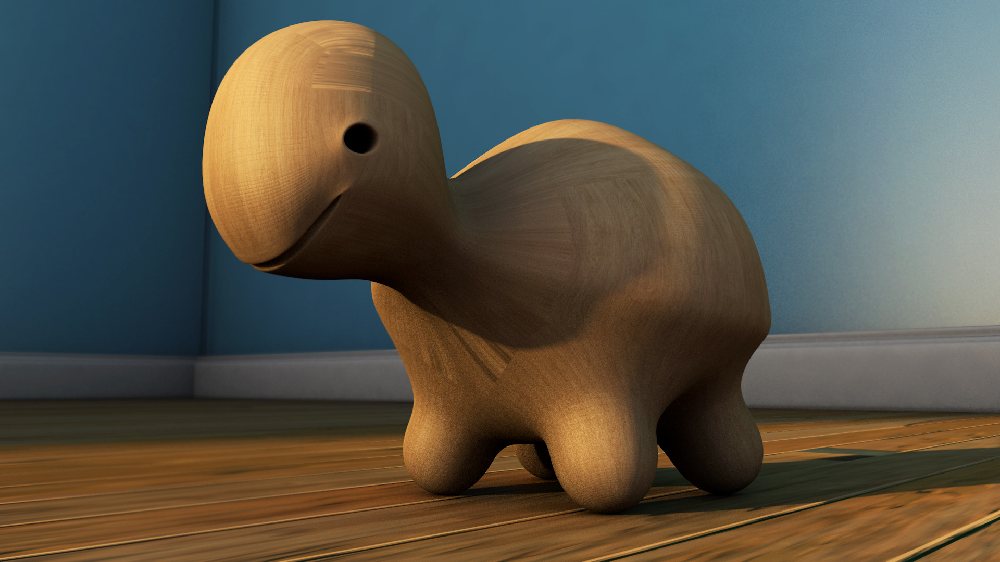
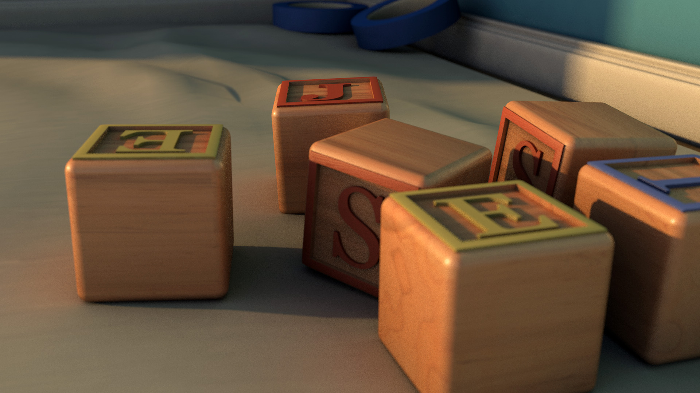
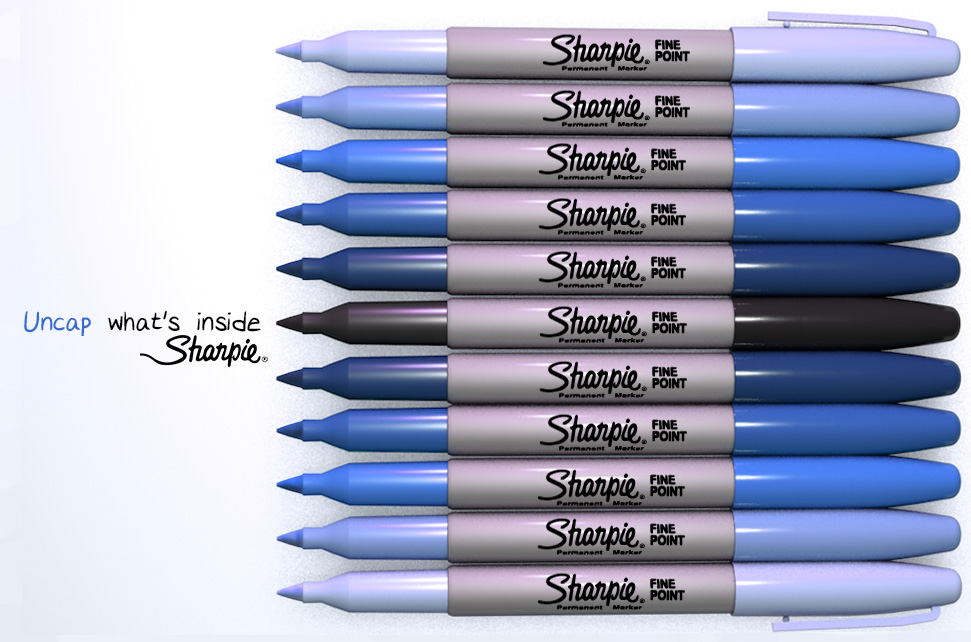
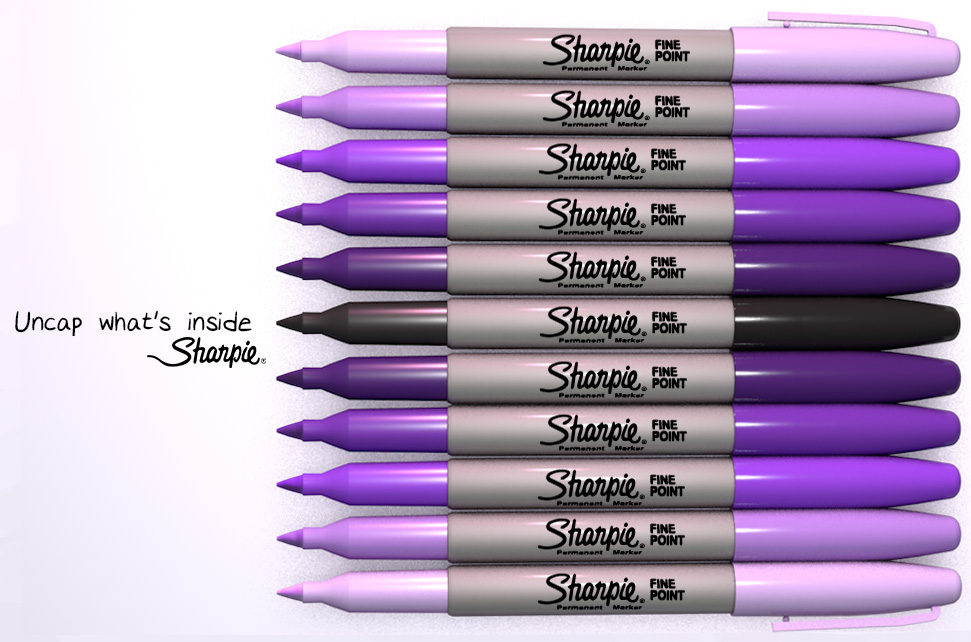
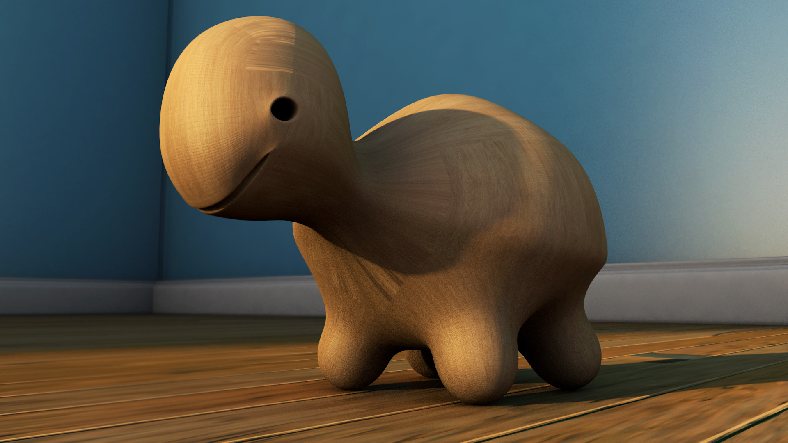
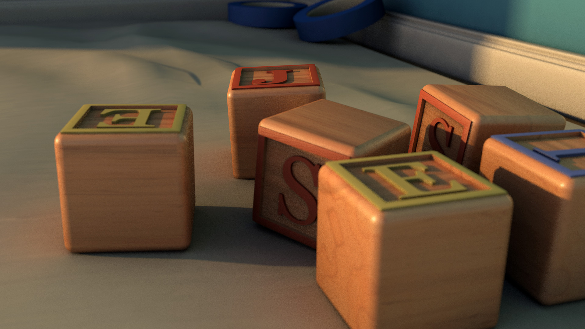
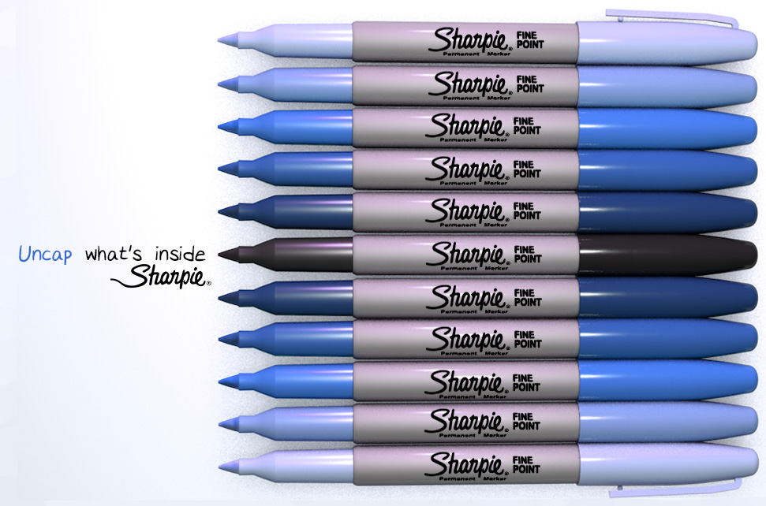
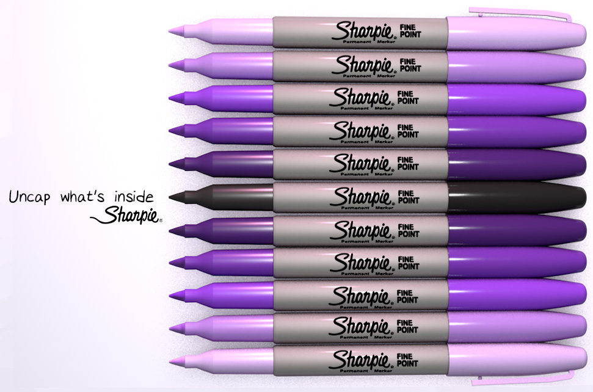

These are all works I have created for class assignments using Cinema 4D. I sculpted, textured, and staged all of these models in C4D. Some pieces were brought into photoshop for some post rendered touch-ups
 






